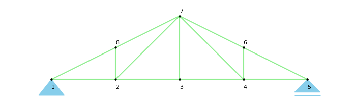
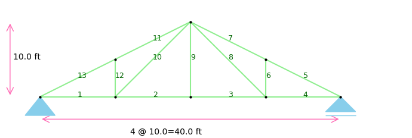

As shown in the following image, nodes are numbered counter-clock wise
The following images show the examples of element numbering
Every Bridge or Roof Truss are consisted of number of pannels that need to be imput to the form.
Based on material (Steel, Concrete, etc.) and selected unit system input E value.
Input the cross section area of the truss members. If you want to see the member loading results on nu-defromed strcuture put a large value for A.
Select support types (pinned or roller) for the structure , chack the system for instability
Add a value for point loading applied to a node. The numde number is identified based on provided numbring system. After one analysis you will see the numbered structure
Input the heigh for the Column
Apply the support type for each end
By submitting the analyses you will see critical loads and mode shapes
This page is constantly improving, our focus is on making engineering a fun experience.
{% endblock %}